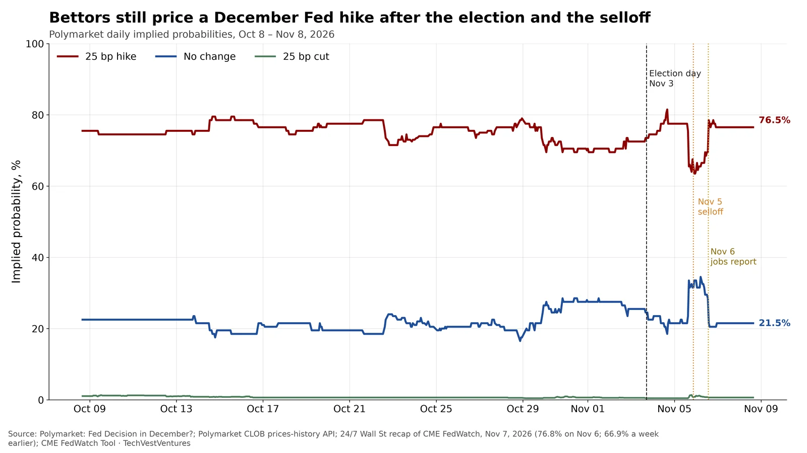

Q6. Fed Odds

Polymarket’s still-open “Fed Decision in December?” market prices a 25-basis-point hike at 76.5% as of this fetch (Nov 8), with no-change at 21.5% and a 25 bp cut at 0.7%. The hike contract was about 72.5% at the Nov 2 close (hold 25.5%) and is 76.5% now. A Nov 7 recap of CME FedWatch put the December 25 bp hike at 76.8% on Friday Nov 6, up from 66.9% a week earlier, after October payrolls rose 165,000; that is essentially the same reading as Polymarket’s 76.5%. The election (Nov 3) and the Nov 5 equity selloff did not knock hike odds off their perch; the larger move was the post-jobs-report firming already visible in FedWatch.
- Polymarket now: 25 bp hike 76.5%, hold 21.5%, 25 bp cut 0.7%.
- Nov 2 (day before the election): hike about 72.5%, hold 25.5%.
- CME FedWatch via 24/7 Wall St: 76.8% hike on Nov 6, vs 66.9% a week earlier, after +165k October payrolls.
Note: The older Polymarket slug fed-decision-in-december is a prior-year market that already resolved to a 25 bp cut and is not used here. Index-style ICE/CME probabilities are futures-implied, not official Fed guidance; 24/7 Wall St is a secondary recap of FedWatch because CME’s own JSON was not captured in this run. Economist-survey comparisons were not fetched as a primary file this run, so they are omitted rather than guessed.
Sources: Polymarket: Fed Decision in December? Polymarket CLOB prices-history API 24/7 Wall St recap of CME FedWatch, Nov 7, 2026 (76.8% on Nov 6; 66.9% a week earlier) CME FedWatch Tool